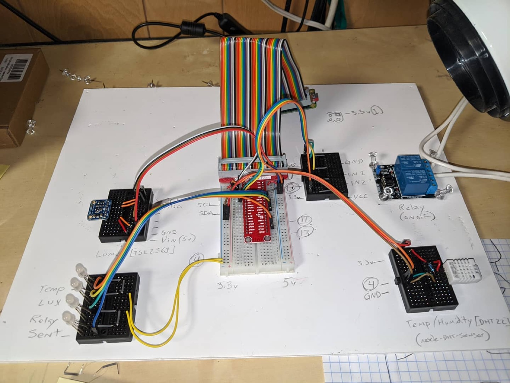
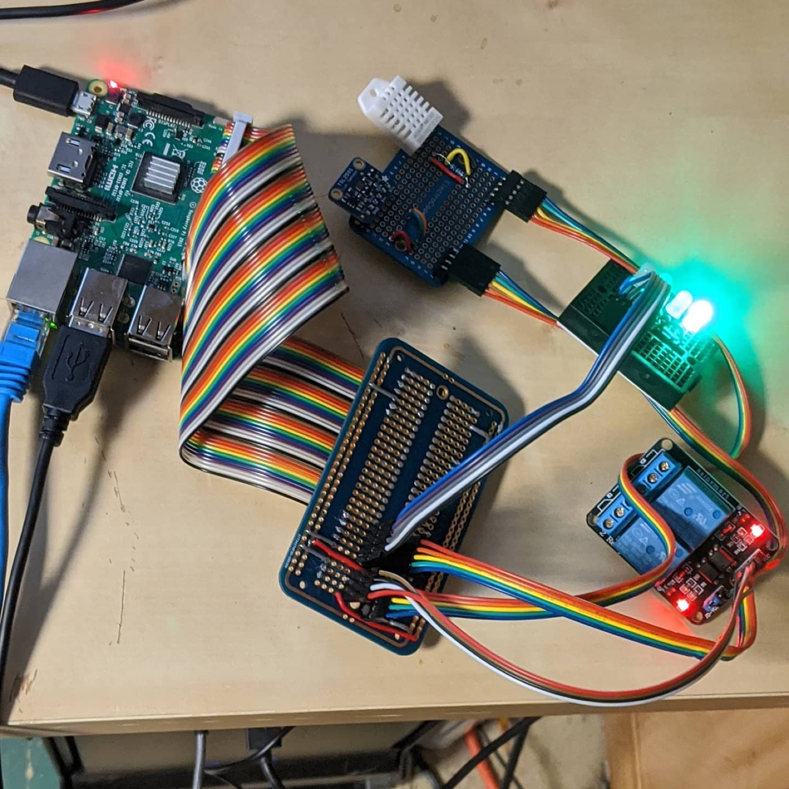
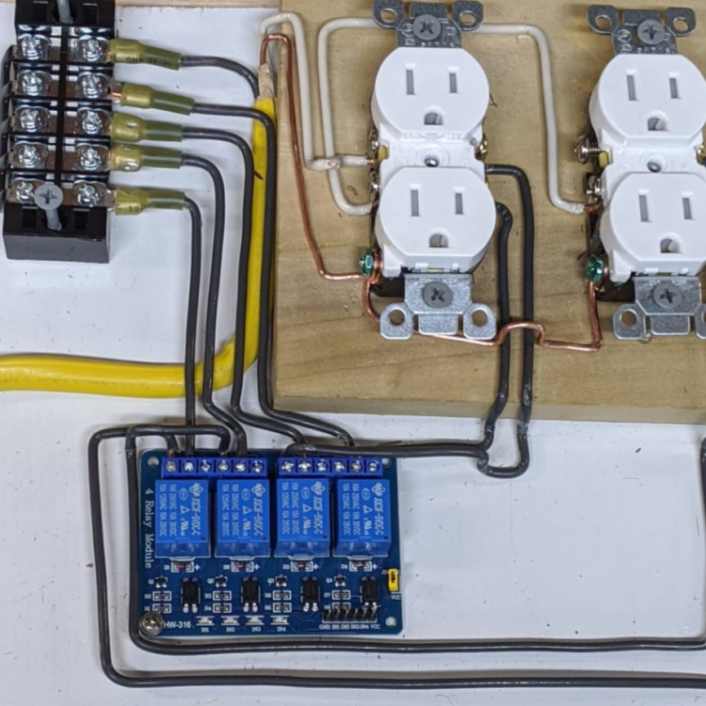
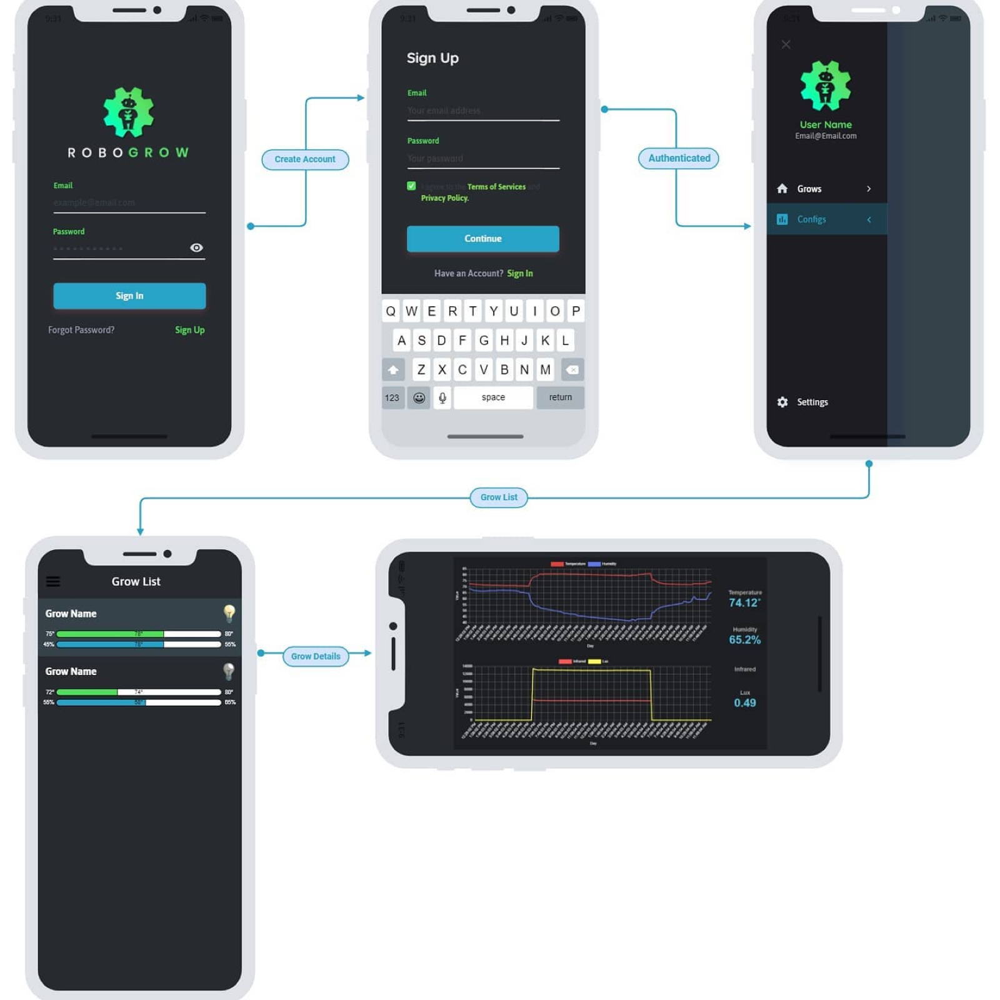

Robogrow
A Raspberry Pi sitting in a grow tent, reading the room and deciding what to do about it. Ten years, four rewrites, and it is still running.
- Running since
- 2015
- Brain
- Raspberry Pi
- Service
- Node.js daemon + API
- Clients
- Web dashboard · Android
- Switching
- 120v / 240v relay bank

The problem
Plants want boring consistency and I am not boring or consistent. Lights want to be on for exactly the same hours every day whether or not I am home. Soil wants water when it is dry, not when I remember. Temperature and humidity want to stay inside a window that shifts with the season and the weather outside the house.
All of that is a control loop, and control loops are the one thing a computer will genuinely never get bored of.
The shape of it
Three stages, deliberately kept separate. Sensors know nothing about relays; relays know nothing about schedules; the clients know nothing except what the API tells them.
- Temperature
- Humidity
- Light + infrared
- Soil moisture
- Raspberry Pi
- Node.js daemon
- Scheduling + thresholds
- Sensor calibration offsets
- 120v / 240v relay bank
- Lighting cycles
- Watering
- Logged to dashboard
The daemon reads the sensors, compares them against the configured thresholds and schedule, and throws relays when something needs to change. An API sits on top of the same data, so the web dashboard and the Android app are two views of one source of truth rather than two implementations of the same logic.
What it actually reads
Two sensors do most of the work, and they talk to the Pi in completely different ways — which is half the reason the sensing layer is its own module.
- A DHT22 on GPIO 4 for temperature and humidity — a single-wire protocol with strict timing, handled through node-dht-sensor, which I keep a fork of.
- A TSL2561 over I²C for light. It returns a broadband channel and an infrared one, which is why the dashboard graphs infrared and lux separately rather than reducing them to one "brightness" number.
The row of LEDs along the edge of the bench board is labelled Temp,
Lux, Relay and Sent. They are not decoration —
they are the debugger. When the service is headless in a tent, four LEDs telling you which
stage of the loop last completed will find a fault faster than SSHing in and reading
logs.

Switching mains
This is the end of the chain, and the part where being clever is actively dangerous — so it is the part that stayed the most boring. A four-channel relay module drives two duplex receptacles, giving four independently switched sockets for lights and pumps. The relays are rated 10 A at 250 VAC; mains lands on a barrier terminal block and is distributed with crimped ring terminals rather than anything twisted together, and ground is bonded in bare copper across both receptacles.
The whole assembly is screwed down to a board so that nothing can shift into anything else, and the low-voltage side that the Pi touches stays on its own side of the layout.

One thing I would tell anyone starting this: decide what the relays do when the software is not running before you write a line of the software. A grow light stuck on for three days because a service crashed is a worse outcome than one that never came on at all.
The part nobody tells you about
A DHT22 reads about a degree and a half warm when it is sitting next to a ballast. A light sensor drifts. Two identical sensors in the same tent will disagree with each other, and both of them will disagree with the thermometer you trust.
So every sensor in the config carries a trim value. Not because the code needed to be configurable, but because the physical world does not read like the datasheet and the only way to find the offset is to be wrong first and measure the difference.
This is the single biggest lesson the project taught me, and it transfers directly to software: the model is never the thing. A schedule that is correct in code is still wrong if the sensor feeding it is lying by a degree and a half.
Something to actually look at
A daemon that only reports to a log file is a daemon you stop trusting. The app is where the readings become a thing you can glance at: a list of grows, each showing its current temperature and humidity against the range it is supposed to hold, and a light icon for what the relays are doing right now.
Open one and you get the history — temperature and humidity on one chart, infrared and lux on another, straight off the TSL2561's two channels.

Four rewrites
- 2017 —
raspberry-*. The first working version. A Node server, a web client, and an Android app, all named after the hardware because I had not thought of a name yet. - 2020 —
robogrow. The rename, and the first version with a real configuration model instead of constants compiled into the daemon. - 2020 —
robogrow-android-kotlin. The Android client rebuilt in Kotlin. - 2021 —
robogrow-io. Split intorobogrow-api,robogrow-clientandrobogrow-android: a clean server/client boundary, which is what finally made it possible to change one without breaking the others.